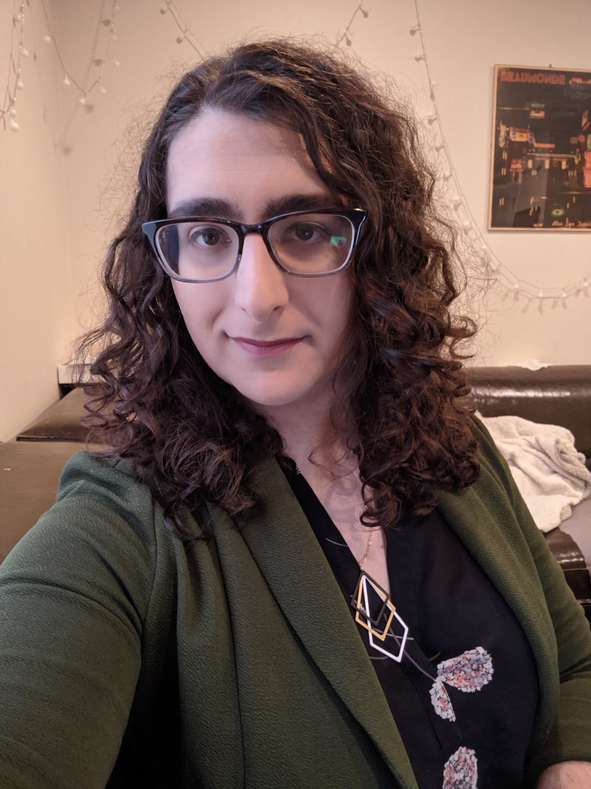

Noa is a software engineer, podcaster, teacher, writer, and community activist. She is dedicated to using her technical skill, creativity, to make the world a more inclusive place.
Noa is a software engineer, podcaster, teacher, writer, and community activist. She is dedicated to using her technical skill, creativity, to make the world a more inclusive place.
Noa is proficient in Ruby, Ruby on Rails, Python, Django, HTML, CSS, JavaScript, React, Redux, AWS, and C#.
Noa is an actor and producer of Tabletop Potluck
Noa is a writer